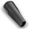

Grande capacidade
Barril de 20L para todo tipo
de limpeza.
Excelente
desempenho
1300W de potência,
ótima aspiração com
baixo consumo de
energia.
Leve e eficiente
Com apenas 4,2kg,
proporciona maior agilidade
na hora da limpeza.
Também
aspira líquidos!
Aspira sólidos e todos
os tipos de líquidos,
exceto os inflamáveis.
Aspira até lama e ajuda
a desentupir pias.
Praticidade: 7,7 metros de alcance
Aspira mais áreas com menos
trocas de tomada!
Função sopro
Facilidade na hora de encher balões, colchões de ar, acender churrasqueira e muito mais.
Filtro permanente em
poliuretano, sem odores
após o uso
Seca rapidamente, evitando mau cheiro. Melhor para a saúde: evita a proliferação de bactérias.
Sistema By Pass,
proteção do motor
Evita o superaquecimento,
prolongando a vida útil do
aspirador.
Conjunto completo de acessórios: Possibilitando a limpeza de todos os lugares da casa.
Bocal para pisosProjetado para ser usado em carpetes, tapetes e pisos frios. |
|
|  |
Bocal para cantos e frestasProjetado para aspirar locais de difícil acesso, como frestas e cantos de sofá. |
Bocal para estofadosBocal para estofados, cortinas e demais tecidos delicados. |
|
Tubos prolongadores plásticosProjetados para aumentar o alcance do aspirador em pisos, tetos e cortinas. |
Aspirador com saco
coletor descartável:
- Mantém a garantia do aspirador;
- Mais higiênico, sem contato com o pó;
- Melhor filtragem do ar;
- Evita a proliferação de bactérias;
- Maior cuidado e durabilidade do motor
do produto; - Sacos Originais Electrolux:
fáceis de usar. - *Não utilizar o saco descartável para aspirar líquidos
Controle manual
de sucção
É possível controlar a
força de aspiração de
acordo com a superfície
aspirada. Auxilia na
limpeza de objetos e
tecidos delicados sem
danificálos.
Embalagem
- 1 Aspirador Água e Pó Profissional
GT 3000 (GT30N) - 1 bocal para pisos
- 1 bocal para cantos e frestas
- 1 bocal para estofados
- 2 tubos prolongadores plásticos
- Manual de instruções
- Garantia do produto
Especificações técnicas
- Altura: 602mm
- Largura: 350mm
- Profundidade: 335mm
- Peso líquido: 4,2kg